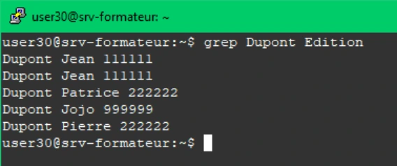
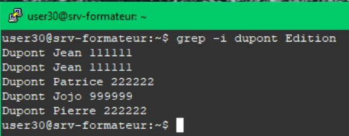
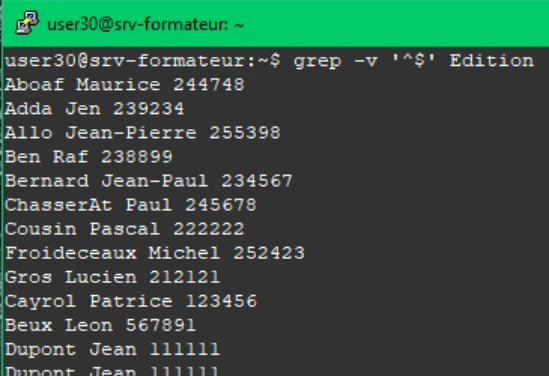
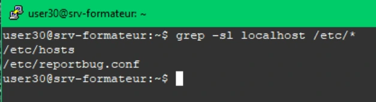
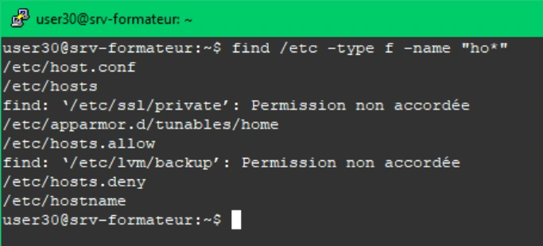
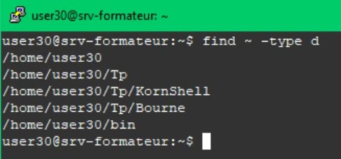
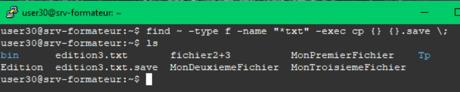

Transcription du document de formation ; texte et captures isolées sont distincts de l’aide pédagogique.
Recherches et regex
TP du Module 06 – Fichiers et dossiers sous Linux
Avant de démarrer ce TP, il convient d’avoir suivi les vidéos du module 6 et d’avoir effectué le TP précédent.
Durée estimée
45 à 60 minutes
Proposition de solution
Dans le module que vous venez de parcourir, vous trouverez les commandes nécessaires pour répondre aux questions.
- Recherchez toutes les lignes contenant Dupont dans le fichier Edition.
grep Dupont Edition
- Recherchez toutes les lignes contenant dupont quelle que soit la casse dans le fichier Edition.
grep -i dupont Edition
- Affichez toutes les lignes non vides du fichier Edition.
grep -v '^$' Edition

Visuel isolé du document — Solution du TP 1 - Recherches et regex

Visuel isolé du document — Solution du TP 1 - Recherches et regex
- Listez les fichiers contenant localhost dans le répertoire /etc sans inclure les sous-répertoires.
grep -sl localhost /etc/*
- Recherchez tous les fichiers standards commençant par ho à partir du répertoire /etc.
find /etc -type f -name "ho*"
- Recherchez tous les répertoires depuis votre répertoire personnel.
find ~ -type d

Visuel isolé du document — Solution du TP 1 - Recherches et regex

Visuel isolé du document — Solution du TP 1 - Recherches et regex

Visuel isolé du document — Solution du TP 1 - Recherches et regex
- Recherchez tous les fichiers standards de votre répertoire personnel se terminant par txt et en faire une copie avec l'extension .save.
find ~ -type f -name "*txt" -exec cp {} {}.save \;

Visuel isolé du document — Solution du TP 1 - Recherches et regex

Visuel isolé du document — Solution du TP 1 - Recherches et regex